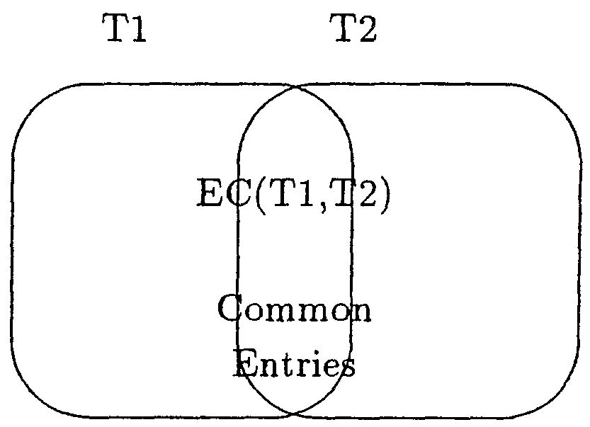
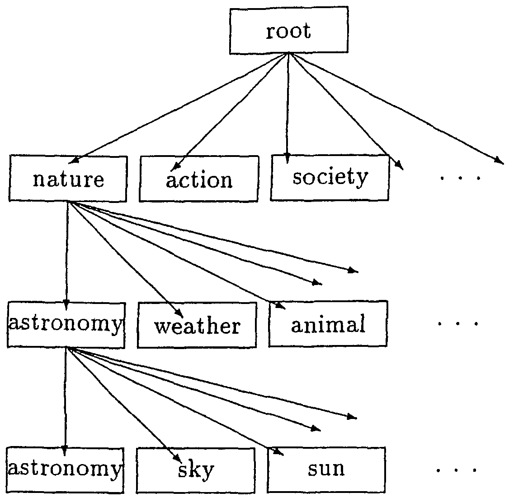
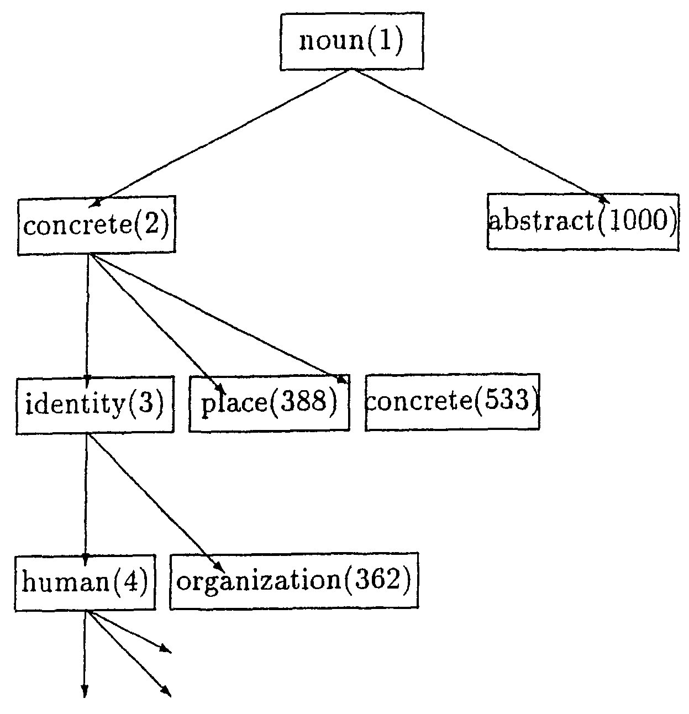

We propose a method for expanding the entries in a thesaurus using a different thesaurus constructed with another concept. This method constructs a mapping table between the concept codes of these two different thesauri. Then, almost all of the entries of the latter thesaurus are assigned the concept codes of the former thesaurus with the mapping table between them. To confirm whether this method is effective or not, we construct a mapping table between the "Kadokawa-shin-ruigo" thesaurus (hereafter, "ShinRuigo") and "Nihongo-goitaikei" (hereafter, "Goitaikei"), and assign about 350 thousand entries with the mapping table. About 10% of the entries cannot be assigned automatically. It is shown that this method can save cost in expanding a thesaurus.
Many thesauri are now available. This is ideal since many natural language processing system can be improved by using the word meanings in a thesaurus (Kashioka et al., 1999). In fact, natural language processing systems have been using thesauri based on specific concepts to get suitable information. Accordingly, each of these systems has required a thesaurus established with a slightly (or much) different concept than others. Of course, each of such thesauri has covered different entry words. Consequently, the expansion of entry words or the maintenance of a thesaurus by hand has been difficult and huge cost have been involved.
Connections do exist between the codes of the different concepts of thesauri. If it were possible to obtain these connections automatically, then these connections would be useful in expanding the entry words of a thesaurus. In this paper, we propose one method to expand the entries of a thesaurus by code estimation involving different thesauri. In the next section of this paper, we describe our method of thesaurus code estimation by making a mapping table of the codes concerning the connections between two thesauri. Section 3 presents an experiment for constructing the mapping table and automatically expanding the entries of thesaurus. In section 4, we discuss the experimental results. In section 5, we state our conclusions.
There are many thesauri for use in natural language processing systems. Imaginably (some parts of) the entries in these thesauri are different. More specifically, these thesauri have different categories for their objectives and their concepts. Accordingly, the maintenance of a thesaurus by hand is difficult because it must keep the consistency of its concepts. However, if the added entries of a thesaurus have the codes of another thesaurus, these codes will be useful for assigning the codes of the former thesaurus. Therefore, this paper proposes a way for assigning the codes of a thesaurus by using the code of a different thesaurus. In this way, first, a system with a method constructs a mapping table for two thesaurus codes. After that, additional entries consult with the different thesaurus, and then the entries are assigned the thesaurus codes from the mapping table and the codes of the different thesaurus. In this section, we show the process of assigning codes using a different thesaurus.
To explain the processing flow, we consider two thesauri: the objective thesaurus called T1 and the different thesaurus called T2. E(T1) denotes the entries of thesaurus T1. Similarly E(T2) denotes the entries of thesaurus T2. Then, EC(T1, T2) denotes the common entries of T1 and T2. Our method constructs a mapping table between T1 and T2 using the common entries.
|
 |
Therefore, we construct the mapping table as follows:
The most important part in this process involves how to select reliable code pairs. The initial constructed code pairs have various patterns.
| Case-1 | One code of T1 connected to one code of T2. | |
| Case-2 | One code of T1 connected to some codes of T2. | |
| Case-3 | Some codes of T1 connected to one code of T2. | |
| Case-4 | Some codes of T1 connected to some codes of T2. |
In this paper, we consider the count and dispersion of the common entries. Case-1 most likely includes a reliable pair. An infrequent pair in Case-1 is not reliable. Note that a pair constructed from only one or two entries and each thesaurus, has many entries in its codes. In such a case, this palr is an unreliable pair in Case-1. Case-2 and Case-3 include reliable pairs. Here, the reliability depends on the purpose for which the mapping table is used. If the codes change direction from code T2 to code T1, Case-2 has no problem but Case-3 is unable to determine the target code of T1. In Case-3, the dispersion of the entries in the target codes is considered, and then the reliable pair is judged. In Case-4, it is difficult to judge reliable pairs. Currently, we ignore all code pairs of Case-4.
In this section, we describe how to estimate the codes using a mapping table. The system automatically assigns codes for new entries as follows:
We carried out an experiment with Japanese thesauri: the objective one was "ShinRuigo" (Shin and Masato, 1981), and the different one was "Goitaikei" (lab, 1997). In this section, we show the features of the two thesauri, and describe the details of this experiment,
In this experiment, we used two thesauri, i.e., "ShinRuigo" and "Goitaikei".
"ShinRuigo" has 1,000 category codes, and 60,000 entries. The categories construct three layers, each layer has ten categories. This thesaurus can be represented as a tree structure. Each leaf node of a category is assigned a three-digit number.
|
 |
"Goitakei" has about 2,700 category codes and 120,000 entries for nouns. The categories construct 12 layers, each layer has a different number of child nodes. This thesaurus can also be represented as a tree structure, although not a balanced tree.
|
 |
Both thesauri has some entries assigned with two or more categories in the leaf nodes.
In this experiment, we selected a word entry in "Goitakei", looked it up in "ShinRuigo", and then constructed a code pair from "Goitalkei" to "ShinRuigo".
Each common entry can make one pair. However these pairs include unreliable pairs. Considering the purpose of using the proposed mapping table, we should throw out pairs that too law frequency of supported entries.
Table 1 shows a part of an initial constructed code pair.
| ||||||||||||||||||||||||||||||||||||||||||||||
| The column "Goitaikei" shows category codes and category words. The column "ShinRuigo" shows category codes and category words. The column #(Entry) shows numbers of entry words and the percentages of all entry words in "Goitaikei". |
In the initial code pairs, 109 codes of "Goitaikei" cannot make code pairs like code "224", and 169 codes of "Goitaikei" have too many pairs with "ShinRuigo" like code "464" in Table 1. Initially, therefore, almost all of the codes of "Goitaikei" (about 90%) can make pairs with "ShinRuigo". In this initial table, we need to check each mapping pair and to fix it, so that we are able to use the code estimation. Accordingly we select unreliable pairs as follows:
Then, we mark these unreliable pairs.
We checked about 350,000 entries from JICST's Japanese-English dictionary. This dictionary covers mainly science and technology-related terms. These Japanese entries were the target words to assign codes by our proposed method.
Table 2 shows the percentage of source information for the code estimation. In this tabIe, there are three types of source information: 1) "ShinRuigo" (which means that the entry word is included in the Kadokawa Shin Ruigo jiten), 2) Mapping table (which means that the entry word is not included in the Kadokawa Shin Ruigo jiten but included in Goitaikei, and that the code is estimated with the mapping table), 3) Other types of estimation (which means by word construction or template matching).
| Source information | Rate | |
| "ShinRuigo" | 68732 | (19.6%) |
| Mapping table | 91184 | (26.1%) |
| Other type of estimation | 180486 | (51.6%) |
| Unable to assign | 9580 | (2.7%) |
| Total: | 349982 | (100.0%) |
The target entries were almost all science and technology-related terms. Accordingly, a large number of them had compound words with the same pattern. This made it easy to estimate the codes by template matching.
The experimental results show that the mapping table is useful because about 91,000 entries could be assigned thesaurus codes automatically. However, this mapping table should be checked and should be polialled up more. One of the points for improving the mapping table is to remove the minor code pairs among all of the pairs in the mapping table. For example, the category [bone] in "Goitaikei" has four entries: "bone," "anatomy," "basin," and "cadre". Three of these entries ("bone," "anatomy," and "basin") are classified in the category [sinew] in "ShinRuigo" and the last entry (" cadre") is classified in category [architecture] in "ShinRuigo". In this case, we throw out the mapping pair ([bone] "Goitaikei", [architecture] "ShinRuigo") because this code mapping may be minor,
We need to consider the hierarclly of codes. For example, the code "168 (crowd)" in "Goitaikei" is mapped to the codes "537 (crowd), 538 (citizen)" in "ShinRuigo" as shown in Table 1. In addition, the codes from "162" to "170" in "Goitakei" are daughter nodes of the code "161" in "Goitakei". "161" means the "hierarchy of society", These codes are mapped to the code "53x" or "54x". If we do not need rigid mapping, mapping in which the codes "161-170" in "Goitaikei" are mapped to "53x" or "54x", is sufficient information. In this case, both middle nodes have almost the same category and there are slightly different classifications under the nodes. In another case, a middle node of "Goitaikei" may be mapped to a leaf node of "ShinRuigo". In Table 1, the codes "1691," "1692," and "1693" have this relationship. Considering these points, we are able to carry out mapping from the structure of a thesaurus to the structure of another thesaurus. This structure mapping is useful for improving the accuracy of the code estimation.
In this paper, we proposed a method for expanding the entries of a thesaurus by constructing a mapping table between this thesaurus and a different thesaurus. We experimented with two Japanese thesauri, and could expand the 350,000 entries of the former thesaurus automatically using the mapping table. The experimental results showed us that this method is effective in reducing cost. We think it was interesting to find differences or the identities of concepts of two (or possible more) thesauri by exploring the mapping table between them. In the future, we want to construct structure mappings between two thesauri. This will allow us to improve the mapping table. These structure mappings will be useful for finding good hierarchies for large-scale thesauri or for adapting the granularity of categories. We are planning to make a large-scale thesaurus based on the current thesaurus as a real application.
This research was conducted at ATR Interpreting Telecommunications Research Laboratories, Japan. In particular, we would like to thank TAKAO Kazutaka for his support.